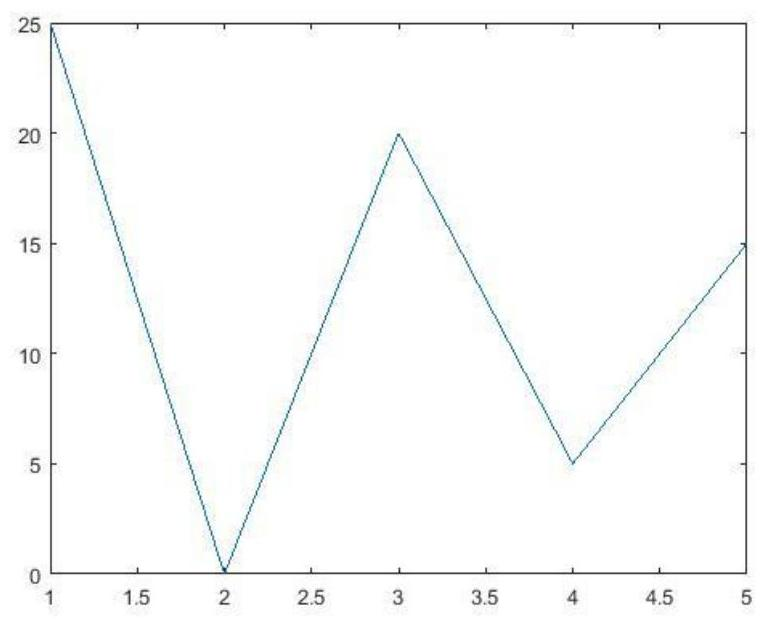
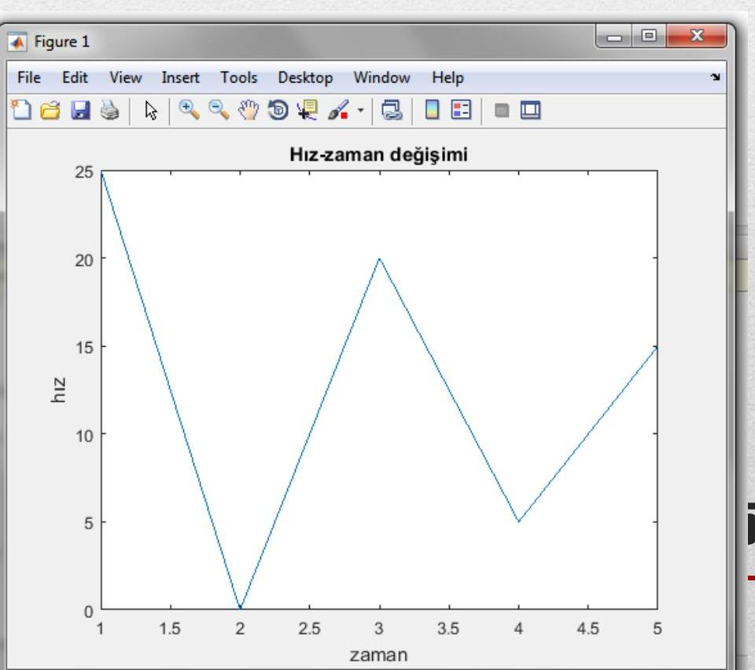

MATLAB, veri analizi ve sayısal hesaplamaların yanı sıra bu verilerin görselleştirilmesine olanak tanıyan güçlü bir grafik ortamı sunar. Bu ders notunda, özellikle 2 boyutlu grafiklerin nasıl oluşturulacağı, özelleştirileceği, çoklu grafiklerin aynı ya da farklı pencerelerde nasıl gösterileceği, eksenlerin nasıl ayarlanacağı ve özel fonksiyonlarla grafik çiziminin nasıl yapılabileceği anlatılmıştır. Öğrencilerin hem temel plot komutunu hem de fplot, ezplot, subplot, legend, text, gtext gibi yardımcı fonksiyonları öğrenmesi hedeflenmiştir.
Temel Terimler ve Kavramlar
plot: 2B veri grafiklerini çizmek için kullanılan temel komut.
xlabel, ylabel, title: Grafik eksenlerini ve başlığını etiketlemek için kullanılan komutlar.
grid: Grafik arka planına kılavuz çizgileri eklemek/kaldırmak için kullanılır.
hold on/off: Aynı grafik üzerine birden fazla çizim yapmaya izin verir veya kapatır.
legend: Çoklu grafiklerde her seriyi tanımlamak için açıklama kutusu ekler.
figure: Yeni bir grafik penceresi açar.
subplot: Tek bir pencerede birden fazla alt grafik oluşturur.
axis: Grafik eksen sınırlarını ve görünüm özelliklerini ayarlar.
fplot / ezplot: Sembolik fonksiyonların grafiklerini doğrudan çizmeye yarayan komutlar.
Ana Gövde: Kronolojik veya Tematik Kayıt
Grafikler
MATLAB, hesaplamaların görselleştirilmesini sağlayan etkileşimli bir ortam sunar. Çizilebilen başlıca grafik türleri şunlardır:
Çizgisel: plot, plot3, polar
Yüzey: surf, surfc
Ağ (mesh): mesh, meshc, meshgrid
Halka (contour): contour, contourf
Özel grafikler: bar, bar3, pie, pie3, rose
Animasyonlar: moviein, movie
2 Boyutlu Grafikler
x-y düzleminde çizilen grafiklerdir ve üç ana kategoriye ayrılır:
Doğru ve veri grafikleri
Fonksiyon grafikleri
Özel grafikler (pasta, çubuk vb.)
2 Boyutlu Doğru ve Veri Grafikleri
Temel plot komutu kullanılır:
x = [1 2 3 4 5];y = [25 0 20 5 15];plot(x, y)

Alternatif kullanım:
plot([1 2 3 4 5], [25 0 20 5 15])
Eksenleri Adlandırma ve Grafik Başlığı
xlabel('zaman')
ylabel('hız')
title('Hız-zaman değişimi')
Bu komutlar plot’tan sonra yazılmalıdır.

Grafiğe Kılavuz Çizgilerinin Eklenmesi
grid on → kılavuz çizgilerini açar
grid off → kapatır
Sadece grid yazıldığında mevcut durumu değiştirir (toggle).